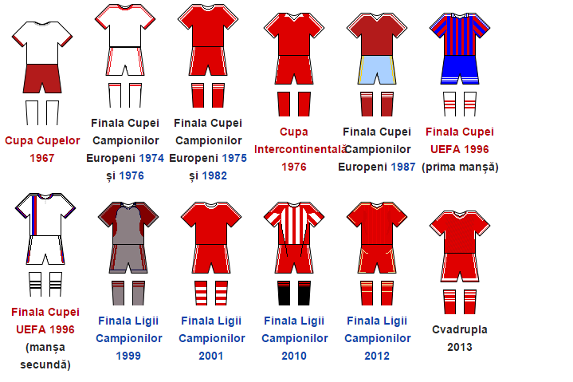

Culori și stemă
La început culorile bavarezilor erau alb și albastru,dar clubul folosește până în 1905 tricouri albe și șorțuri albastre,atunci când Bayern intră în MSC.MSC decide că jucătorii trebuie să joace în șorțuri roșii.Bayern a jucat în roșu și alb în cea mai mare parte a existenței sale și culoarea albastră a folosit-o ca alternativă.În sezonul 1960-1970 Bayern a folosit ca echipament un tricou cu dungi,având culorile albastru și alb și pantaloni scurți și șosete albastre.Un stil similar l-a avut în 1995,când culoarea albastră a devenit culoarea dominantă pentru prima dată. Din 1999 Bayern a revenit la culoarea sa inițială.În deplasare au avut de-a lungul anilor o varietate de culori,inclusiv alb,negru,albastru,auriu și verde.În 2009 Bayern a avut un echipament roșu.
Echipamente istorice
